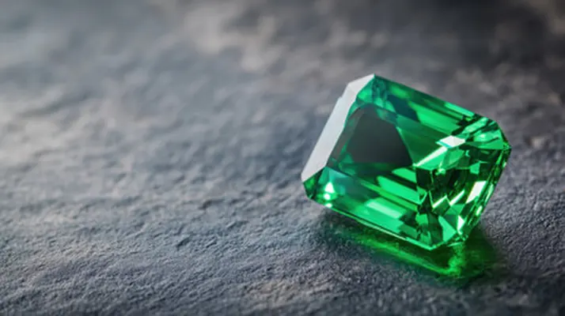

海藍寶石：綠柱石家族的海之精靈
海藍寶石是綠柱石家族裡「被大海染藍」的精靈——它的藍，來自一點點鐵。

核心定義
海藍寶石（aquamarine）是綠柱石家族的藍色成員，名字來自拉丁語「海水」（aqua marina）。它的藍色來自鐵（Fe²⁺）：鐵離子吸收特定波長光，讓寶石呈現天藍到海藍的色調。沒有鉻釩的綠柱石，鐵成了藍色的畫筆。
海藍寶石以「清澈透亮」聞名：它常見大顆、淨度佳、價格親民，是藍色寶石中的「大眾情人」。頂級海藍寶（聖瑪利亞色，Santa Maria）顏色濃藍，價格可達一般品的數倍。
特徵與分類
| 色調 | 描述 | 市場 |
|---|---|---|
| 淺天藍 | 清透日常 | 大宗 |
| 海藍（濃） | 濃而明亮 | 中高端 |
| 聖瑪利亞色 | 濃藍、偏深 | 頂級（巴西/非洲） |
海藍寶的顏色分級看「濃度與明亮度」：越濃越藍越值錢，但過深會帶灰綠調（鐵多）。天然海藍寶多為淺色，深色海藍寶相對稀有——所以「深藍海藍」有獨立行情。
科學原理
海藍寶的藍色來自鐵離子（Fe²⁺）在晶格中的電荷轉移吸收；鐵含量與氧化狀態決定藍的深淺。加熱處理可把黃綠調的海藍寶轉成純藍（Fe³⁺→Fe²⁺），這是市場常見的優化。
海藍寶是「大晶體之寶」：綠柱石晶體常長得又大又清澈，海藍寶因此常見數十克拉的裸石——大克拉海藍寶是市場常態，價格遠比同克拉祖母綠親民。
鑑定與鑑別方法
- 折射率 1.57–1.58、比重約 2.7 確認綠柱石
- 看顏色：鐵致色天藍，排除染色的藍色石英/玻璃
- 顯微鏡找液體包裹體與兩相包裹體
- 加熱與否影響顏色，證書揭露處理
- 分辨與藍托帕、藍鋯石：折射率與比重不同
市場行情與保養建議
行情上，海藍寶是「大而美」的藍色寶石：5 克拉以上淨度佳的標本，單克拉價逐步攀升；聖瑪利亞色頂級品有獨立溢價。整體而言，它是入門彩色寶石與日常珠寶的高性價比選擇。
選購提醒：先看顏色濃淡（自然光下），再看淨度與克拉；加熱提色是市場常態，誠實揭露即可。海藍寶硬度 7.5–8，適合日常佩戴，但要避免大力撞擊。
常見誤區
不同礦物家族：海藍寶是綠柱石（硬度 7.5–8），藍寶石是剛玉（硬度 9）。價格差異來自稀有度與硬度，不是「同種的貴賤」。
過深的藍會帶灰綠調（鐵多），反而不美。頂級海藍寶是「濃而清」——像乾淨的海水，不是墨汁。
冷知識
傳說水手佩戴海藍寶可保航行平安，古羅馬人相信它與海神相關——「海之精靈」的稱號，從古至今。
綠柱石能長出巨大晶體——巴西曾發現重逾百公斤的海藍寶晶柱，被切割成大量寶石。大，是海藍寶的天性。
反直覺觀點
天然海藍寶多為淺色，市場上的深藍海藍寶不少經過加熱提色——「深藍」可能是窯的功勞。證書揭露，才見真章。
海藍寶清澈透亮、大顆親民；藍寶石濃豔高貴但小而貴。美感與預算的平衡，往往讓海藍寶成為「日常的贏家」。